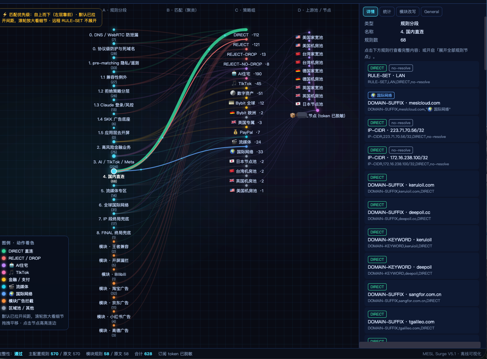

Disclaimer: This page is for rule-setting discussion and technical exchange only.
It is not sharing of proxy access, not promotion of any VPN/airport/service, and not an offer to provide connectivity.
No live subscription URLs or nodes are included. Placeholders must be filled with your own lawful resources.
You are responsible for GitHub terms and local laws. This is not legal advice.
Purpose
Discuss how a Surge profile can structure policy groups and match order. Artifacts are configuration examples for study, not a packaged service.
Routing logic (short)
- Protect and clean — DoH/DoT / STUN related rejects; ad/tracker rejects with allowlists.
- Finance-related policies — example splits by region policy labels (EU / TW / UK / PayPal).
- AI and identity-related policies — example grouping for AI domains and shared challenge/telemetry hosts.
- TikTok-related policy — example Smart group filtered by node name patterns.
- Domestic and LAN — domestic apps / Apple CN-CDN / NTP / China IP / GEOIP → DIRECT.
- Streaming-related policies — example sets for YouTube / Netflix / regional lists.
- General international policies — chat / GitHub / global lists.
- FINAL — fallback policy (
dns-failedaware).
These names are labels in a sample profile, not recommendations to buy or use any provider.
Rule map (preview)

Open the interactive study map: rule-map.html (browser local file). EN/中文 UI inside the map defaults to English.
Files (examples)
| File | Role |
|---|---|
index.html | This description page (one language at a time) |
rule-map.html | Interactive sample rule graph |
profiles/Your-Subscription-Surge-V6.0.share.conf | Sample Surge profile (placeholders only) |
profiles/Your-Subscription-AdBlock-V6.0.sgmodule | Sample ad-related module |
Personalizing the sample
- Replace
REPLACE_WITH_YOUR_SUBSCRIPTIONonpolicy-pathwith a subscription you already own and may use. - Replace
your-subscribe-host.exampleif needed. - Import into Surge only if lawful for you.
Agent prompts (optional)
A) Chat-driven
Customize this sample Surge profile for my own already-owned subscription. Files: profiles/Your-Subscription-Surge-V6.0.share.conf, profiles/Your-Subscription-AdBlock-V6.0.sgmodule, rule-map.html. 1) Replace REPLACE_WITH_YOUR_SUBSCRIPTION with MY_OWN_SUBSCRIPTION_URL 2) Replace your-subscribe-host.example with MY_OWN_HOST 3) Do not change policy logic unless I ask 4) Output the full modified files. Do not invent nodes or provide access.
B) Write local result files
Open this sample repo. Replace policy-path=REPLACE_WITH_YOUR_SUBSCRIPTION with my own URL. Replace your-subscribe-host.example with my own host. Write ./dist/Your-Subscription-Surge-V6.0.personalized.conf and copy the sgmodule to ./dist/ Summarize placeholder replacements only. Do not commit/push unless I ask.
Notes on other clients (e.g. Shadowrocket)
Conversion here means format study of match rules you already have rights to use—not providing a proxy service. Smart / MITM / Script may not map 1:1.